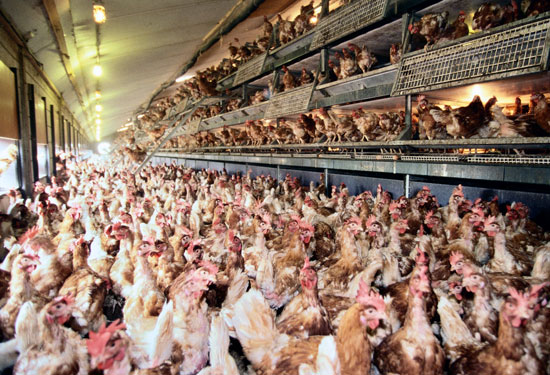
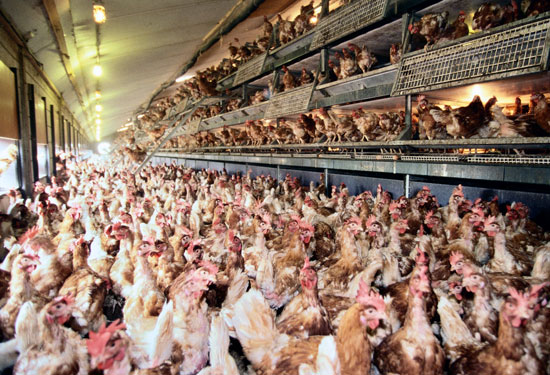

Pastured Chickens
Chickens were first domesticated in Asia about 8000 years ago, and came to the U.S. by way of Europe in the 15th century. The average American eats about 80 pounds of chicken per year, which makes it by far the main source of animal protein in the American diet.
The high demand for chickens has created bottom-line driven factory farms where chickens live and die in terrible conditions. They're kept alive pumped full of antibiotics and nasty chemicals, and genetically engineered to grow artificially quick, and the people who work in such factories also suffer terrible injuries in the attempt to keep up with speeded-up assembly lines.
Grass-fed, pastured, organic chickens, grown the old-fashioned way, are still available throughout the U.S. from family farms who care about their animals and provide them with good, healthy diets and lifestyles. Their meat is much healthier and tastier than industrial chicken